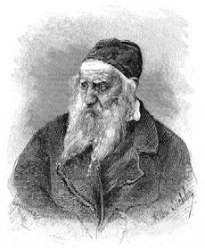
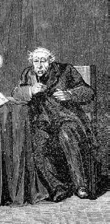

4 Nisan 1897
Joly'nin sözünü ettiği Guédon'a yanaşmaktan başka çarem kalmamıştı. Beaune Sokağı'ndaki kitapçı kırışık tenli, daima siyah yünlü, bol bir etek giyen, başına –neyse ki– yüzünün yarısını örten Kırmızı Başlıklı Kız modeli bir şapka takan ihtiyar bir evde kalmış kız tarafından yönetiliyordu.
Kendisini çevreleyen dünyaya alaycı gözlerle bakan kuşkucu Guédon'u orada hemen bulmuştum. İnançsız insanlardan hoşlanırım. Joly'nin çağrısına hemen kulak vermiş ve ona yiyecek ile biraz para göndereceğini söylemişti. Sonra uğruna para harcamaya hazırlandığı arkadaşıyla dalga geçmişti. Kitabı okuyanlar zaten doğaları gereği Cumhuriyetçiyken ve diktatörü destekleyenler Tanrı'nın lütfu sayesinde genel seçim hakkı kazanan ama okuma yazması olmayan köylüler iken insan neden bir kitap yazar ve hapsi göze alırdı ki?
Fourier yanlıları mı? İyi insanlardı ama Varşova'da portakal yetişeceği, okyanusların limonataya dönüşeceği, insanların kuyruğunun çıkacağı, ensest ve eşcinselliğin insanoğlunun en doğal dürtüleri olarak kabul edileceği bir dünyayı müjdeleyen bir peygamberi nasıl ciddiye alabiliyorlardı ki?
"Peki o halde neden onlarla birlikte oluyorsunuz?" diye sormuştum Guédon'a.
"Çünkü" demişti bana, "alçak Bonapart diktasına direnen tek dürüst insanlar onlar. Şu güzel hanımı görüyor musunuz? Adı Juliette Lamessine'dir, Kontes d'Agoult'nun salonunun en etkin kadınlarından biridir ve kocasının paralarıyla Rivoli Sokağı'nda kendine ait bir salon kurmaya çalışmaktadır. Büyüleyicidir, zekidir, yetenekli bir yazardır, onun evine davet edilmek önemli olacaktır."
Guédon bana uzun boylu, yakışıklı, etkileyici bir kişiyi daha göstermişti. "Bu da L'Esprit des bêtes'in ünlü yazarı Toussenel. Sosyalist, inatçı bir Cumhuriyetçidir; kendisine en ufak bir nazar bile etmeyen Juliette'e çılgınlar gibi âşıktır. Ama burada bulunan en aydınlık zihin onunkidir."
Toussenel bana modern toplumu zehirlemekte olan kapitalizmden söz ediyordu.
"Kim bu kapitalistler? Zamanımızın hükümdarları olan Yahudiler. Geçen yüzyılın devrimi Capeto'nun kellesini uçurdu, bizim yüzyılımızınki de Musa'nınkini uçurmalı. Bu konuda bir kitap yazacağım. Yahudiler kimdir? Savunmasız insanların, halkın kanını emen kişiler. Protestanlar, masonlar. Ve tabii ki Yahudiler."
"İyi ama Protestanlar Yahudi değildir ki" diye çıkış yaptım.
"Yahudi diyen Protestan demiş olur; İngiliz Metodistler, Alman Pietistler, İsviçreliler, Hollandalılar Tanrı'nın iradesini Yahudilerin kitabından yani Kitabı Mukaddes'ten okuyorlar; bu kitaptaki öykülerde ensest, vahşi savaş katliamları, sadece ihanet ve dalavere ile kazanılan zaferler, kadınlara el koymak için erkeklerini idam ettiren krallar, kendilerini azize diye tanıtan ama kafalarını kesmek için düşman generallerin yatağına giren kadınlar var. Cromwell Kitabı Mukaddes'i okuyarak kralının başını kesti, yoksulların evlatlarına hayat hakkı tanımayan Malthus Kitabı Mukaddes'i ezberine almıştı. Yahudiler vaktini esaretini hatırlayarak geçiren ve ilahi gazabın işaretlerine karşın altın buzağı kültüne bende olmaya hazır olan bir ırktır. Yahudilere karşı girişilecek savaş bu ada layık olmak isteyen her sosyalistin ana hedefi olmalıdır. Komünistlerden söz etmiyorum, çünkü onların kurucusu da Yahudidir ama asıl sorun paranın yarattığı yolsuzluğu ihbar etmektir. Elma neden bir Paris lokantasında Normandiya'daki bir lokantanın yüz katı fiyata satılmakta? Başkalarının etiyle yaşayan avcı, tacir halklar var; bir zamanlar Fenikeliler ve Kartacalılar böyleyken, bugün bu rolleri İngilizler ve Yahudiler üstlenmiş durumdalar."
"Sizin için İngiliz ve Yahudi aynı anlama mı geliyor?"
"Neredeyse öyle. Hıristiyanlık'a dönmüş bir Sefarad Yahudisi olan Disraeli adındaki önemli İngiliz siyaset adamının Coningsby romanında neler yazdığını okumanız gerekir. Yahudilerin dünyayı egemenlikleri altına alma niyetinde oldukları yüzsüzlüğünü göstermiş."
Ertesi gün bana uzun metinlerin altını çizdiği Disraeli'nin bir kitabını getirmişti. "Yahudilerin yer almadığı ve hatta büyük rol oynamadığı önemli bir olay gördünüz mü Avrupa'da? İlk Cizvitler Yahudi'ydiler! Bütün Batı Avrupa'nın betini benzini attıran şu gizemli Rus diplomasisini kim yönetiyor? Yahudiler! Almanya'da neredeyse bütün profesörlük kürsülerinin tekelini kim ele geçirdi?"
"Disraeli'nin halkını ihbar eden bir mouchard olmadığına dikkatinizi çekerim. Tam tersine halkının erdemlerini yüceltmeye uğraşır. Rusya'nın maliye bakanı olan Kont Cancrin'in Litvanyalı bir Yahudi'nin, Mendizábal adındaki İspanyol bakanın Aragonlu bir dönmenin oğlu olduğunu utanç duymadan kaleme alır. Paris'te imparatorluk mareşallerinden biri Soult adındaki bir Fransız Yahudisinin evladıdır, İbranice adı Manasseh olan Massena da Yahudi'ydi... Öte yandan, Almanya'da düzenlenen devrim kimin himayesinde gelişiyor? Yahudilerin himayesinde, bakınız Karl Marx ve onun komünistleri."
Toussenel söylediklerinde haklı mıydı emin değildim ama bu sert suçlamaların devrimci ortamlarda dolaşan sözler olduğunu hissetmemle birlikte aklıma bazı fikirler geldi... Cizvit karşıtı belgelerin kime satılabileceği konusu belirsizdi. Belki masonlara olabilirdi ama henüz o dünyayla ilişki kurmamıştım. Mason karşıtı belgeler belki Cizvitleri ilgilendirebilirdi ama henüz bu tür belgeler üretmeye hazır hissetmiyordum kendimi. Napolyon karşıtı? Bunlar tabii ki hükümete ve aslında iyi bir pazar potansiyeline sahip olan Cumhuriyetçilere satılamazlardı; Sue ve Joly'den sonra söyleyecek pek bir söz kalmamıştı. Cumhuriyetçilere karşı? Orada da hükümet işine yarayan her şeye sahip görünüyordu; Lagrange'a Fourier yanlıları hakkında bilgi teklif etsem bana gülerdi, çünkü kim bilir muhbirlerinin kaç tanesi zaten Beaune Sokağı'ndaki kitapçının müdavimiydi.
Kim kalıyordu geriye? Yahudiler. Yahudileri saplantı haline getiren bir tek büyükbabamdır sanıyordum ama Toussenel'e kulak verdikten sonra sadece Rahip Barruel'in olası torunları tarafından değil (ki bunlar hiç de az değildiler) aynı zamanda devrimciler, Cumhuriyetçiler ve sosyalistler kanadında da bir Yahudi karşıtı pazar oluşturulduğunu fark ediyordum. Yahudiler kiliseye düşmandı, kilisenin kanını emdiği avam tabakası da öyle; bazı hükümetler de Yahudi düşmanıydı. Demek ki Yahudiler üzerine çalışmak gerekiyordu.
İşimin kolay olmadığının farkındaydım: belki kilise çevrelerinden biri hâlâ Barruel'in Yahudilerin masonlar ve Tapınak Şövalyeleri'yle işbirliği yaparak Fransız Devrimi'ne yol açtığı bilgisini içeren kitabından etkilenebilirdi ama bu örneğin, Toussenel gibi bir sosyalistin umurunda bile olmazdı; ona Yahudilerle sermayenin birikimi ve Britanya Suikastı ile ilgili daha kesin bir rapor vermek gerekirdi.
Hayatım boyunca tek bir Yahudi ile bile ilişki kurmamış olduğuma şimdi pişmanlık duyuyordum. Tiksintim ile ilgili büyük boşluklar olduğunu ve bu tiksintinin giderek gücenikliğe dönüştüğünü hissediyordum.
Bu düşünceler yüzünden köpürüp dururken bizzat Lagrange bana bir çıkış yolu açtı. Lagrange'ın randevularını hep alışılmadık yerlerde vermesine alışmıştım zaten; bu seferki buluşma yerimiz Père-Lachaise mezarlığıydı. Haklı da sayılırdı, oraya defnedilmiş sevdiğimiz bir yakınımızı arayan ya da geçmişi ziyaret eden iki romantik kişi –o gün sanatçıların, felsefecilerin ve âşık ruhların hedefi olan Abélard ile Héloïse'in mezarlarının civarında dolaşıyorduk– gibi görünebilirdik.
"Evet Simonini, sizi çevremizde tanındığı tek adıyla Albay Dimitri ile tanıştırmak istiyorum. Rusya İmparatorluğu Kançılarya'sının Üçüncü Departman'ı için çalışır. Tabii siz Sen Petersburg'a gider ve bu Üçüncü Departman'ı sorarsanız, herkes apışıp kalır, çünkü resmen böyle bir bölüm yoktur. Bunlar devrimci grupların oluşumunu gözetmekle görevli ajanlardır ve orada sorun bizdekinden çok daha ciddidir. Dekabristlerin varislerinden, anarşistlerden ve şimdi de özgür çiftçiler diye tanınanların huzursuzluklarından sakınmaları gerekir. Çar Aleksandr birkaç yıl önce toprak köleliğini yasakladı ama şimdi özgürlüğüne kavuşmuş yirmi milyon çiftçi karınlarını doyurmaya yetmeyen topraklardan yararlanma hakkı için eski efendilerine para ödemek zorundalar ve bu nedenle pek çoğu iş aramak için kentlere akın ediyor..."
"Peki, bu Albay Dimitri ne istiyor benden?"
"Birtakım belgeler topluyor... Yahudi sorunu üzerine tehlikeli belgeler. Rusya'da burada olduğundan çok daha fazla sayıda Yahudi var ve köylerde Rus çiftçiler için bir tehdit oluşturuyorlar, çünkü okuma ve daha önemlisi hesap biliyorlar. Tabii kentlerden hiç söz etmeyelim; orada pek çoğunun yıkıcı örgütlere katıldıkları varsayılıyor. Rus meslektaşlarımın sorunları çift yönlü: Bir yandan şurada ya da burada gerçek tehlikeyi temsil eden Yahudilerden sakınmak, öte yandan yoksul çiftçinin mutsuzluğunu onlara doğru yönlendirmek. Ama bütün bunlar hakkında size bilgiyi Dimitri verecek. Olay bizi ilgilendirmiyor. Hükümetimiz Fransız Yahudi finans çevreleriyle gayet iyi ilişkiler içinde ve bu çevrelerde huzursuzluk yaratmaya niyeti yok. Bizim tek arzumuz Ruslara hizmet vermek. Bizim meslekte komşu komşunun külüne muhtaçtır ve bu nedenle şimdi zarif bir şekilde bizle resmi hiçbir ilişkisi olmayan siz Bay Simonini'yi Albay Dimitri'ye ödünç veriyoruz. Az daha unutuyordum; Dimitri gelmeden önce Alliance Israélite Universelle hakkında iyice bilgilenmenizi tavsiye ediyorum; bu kurum altı yıl önce burada, Paris'te kuruldu. Buna hekimler, gazeteciler, işadamları üyedir: Paris Yahudi topluluğunun elit tabakası. Hepsi liberal görüşe sahip ve Bonapartçı olmaktansa Cumhuriyetçi olan kişiler. Görünürde topluluk insan hakları adına bütün ülkelerin ve dinlerin kovuşturma açtığı insanlara yardım etmeyi amaçlıyor. Tersi kanıtlanana dek söz konusu kişiler dürüst vatandaşlardır ama aralarına muhbir sokmamız son derece zor, çünkü Yahudiler koklayarak hemcinsini bulan köpekler gibi birbirlerini çok iyi tanıyorlar. Ama ben sizi Alliance üyelerinin güvenini kazanabilmiş biriyle tanıştıracağım. Jacob Brafmann adındaki bu Yahudi din değiştirerek Ortodoks oldu ve sonra Minsk Ruhban Okulu'nda İbranice hocalığına atandı. Albay Dimitri'nin ve onun Üçüncü Departman'ının görevlendirmesi nedeniyle kısa bir süre için Paris'te bulunuyor; aralarından bazılarını eski dindaşları olarak tanıdığı için Alliance Israélite'e girmesi kolay oldu. Bu organizasyon hakkında size bilgi verebilecektir."
"Beni bağışlayın Bay Lagrange. Ama bu Brafmann Albay Dimitri'nin muhbiriyse, bana söyleyeceği her şey zaten Dimitri'nin bildiği şeyler olacaktır ve benim gidip ona bunları bir kez daha anlatmam bir anlam taşımayacaktır."
"Saf olmayın Simonini. Gayet anlamlıdır. Eğer Brafmann'dan aldığı haberleri bir de siz gidip ona anlatırsanız, onun gözünde bilgilere ulaşabilen, onun zaten bildiklerini teyit eden kişi sıfatı kazanırsınız."
Brafmann. Dedemin anlattıklarının etkisiyle, profili akbabayı andıran, dudakları etli ve alt dudağı zencilerinki gibi sarkık, çukur ve yaşlı gözlü, göz kapak çukuru öteki ırklara göre daha az açık olan, saçları dalgalı ya da kıvırcık, kulakları yelken biriyle karşılaşmayı bekliyordum. Oysa karşıma çıkan bey, bir papaz görünümü taşıyan, güzel ve kıvırcık bir sakalı, gür ve çalı gibi kaşları olan ve kaşlarının uçları pek çok Rus ya da Leh'te gördüğüm şekilde şeytani bir püskülle sona eren biriydi.

... karşıma çıkan bey, bir papaz görünümü taşıyan, güzel ve kıvırcık bir sakalı, gür ve çalı gibi kaşları olan ve kaşlarının uçları pek çok Rus ya da Leh'te gördüğüm şekilde şeytani bir püskülle sona eren biriydi.
Demek ki din değiştirince insanın yüz ve hatta ruh çizgileri de değişim geçiriyormuş.
Oburca her şeyi tatmak ve bir mönüyü layıkıyla düzenlemeyi bilmemek gibi bir taşralılık sergilese bile adamın iyi yemeğe özel bir düşkünlüğü vardı. Montorgueil Sokağı'nda bulunan ve bir zamanlar Paris'in en iyi istiridyelerini tatmak için gidilen Rocher de Cancale'de öğle yemeği yemiştik. Mekân yirmi yıl kadar önce kapanmış, sonra başka bir kişi tarafından yeniden açılmıştı; eskisi gibi değildi ama istiridye gene vardı ve bir Rus Yahudisini tatmin edecek nitelikteydi. Brafmann sadece birkaç düzine belons'un tadına bakmakla yetindi ve sonra bir bisque d'écrevisses ısmarladı.
"Böylesine canlı bir halk kırk asır ayakta kalabilmek için yaşamayı seçtiği her ülkede devlet içinde devlet oluşturacak bir hükümet kurmak zorundaydı. Ve bu oluşum, binlerce yıl boyunca savruldukları her yerde ve her zaman varlığını korumalıydı. İşte ben bu devletin varlığını kanıtlayan belgeleri buldum; Kahal adındaki yasa elimde şimdi."
"Neymiş bu?"
"Bu kurum Musa Peygamber zamanına kadar uzanıyor; Yahudilerin dört bir yana dağılmasından sonra gün ışığında işlemediyse de sinagogların gölgesinde sürgün hayatını sürdürdü. Ben Kahal belgelerini buldum; bunlar 1794 ve 1830 yılları arasında Minsk şehrinde kaydedilmiş. Her şey yazılı, en ufak ayrıntı bile kayıtlı."
Anlamadığım işaretlerle dolu birtakım ruloları açıp duruyordu.
"Her Yahudi topluluğu bir Kahal tarafından yönetiliyor ve Bet-Din adı verilen özerk bir mahkemeye bağlı. Bunlar bir Kahal'in belgeleri ama olasılıkla herhangi başka bir Kahal de bundan farklı değildir. Burada bir topluluğa bağlı kişilerin nasıl sadece onları konuk eden devletin mahkemesine değil, dahili mahkemenin kararlarına da uyması gerektiği, bayramların nasıl kutlanacağı, özel yemekleri için hayvanların nasıl kesileceği, helal olmayan etlerin Hıristiyanlara nasıl satılacağı, her Yahudi'nin sonunda bütün mülküne el koymak üzere tefecilikle sömüreceği bir Hıristiyan'ı Kahal'den nasıl alabileceği ve başka hiçbir Yahudi'nin o Hıristiyan üzerinde hak iddia edemeyeceği yazılı. Alt sınıftaki insanlara merhametsizlik, yoksulun varlıklı tarafından sömürülmesi, Kahal'e göre bir İsrailoğlu için suç değil, tam tersine bir erdem. Bazıları Yahudilerin özellikle Rusya'da yoksul olduklarını söylüyor: Doğrudur; pek çok Yahudi varlıklı Yahudiler tarafından yönetilen gizli bir hükümetin kurbanı olmuştur. Yahudi olarak doğmuş olan ben Yahudilerle dövüşmüyorum; ben Hıristiyanlık'ın yerini almak isteyen Yahudi Düşüncesi'ne karşıyım. Onların öldürmüş olduğu İsa şahidimdir, Yahudileri severim..."
Brafmann soluklanırken aspic de filets mignons de perdreaux ısmarladı. Ama sonra hemen onları tarayan parlak bakışlarıyla kâğıtlarına döndü. "Ve her şey özgün, görüyorsunuz değil mi? Kâğıdın eskiliği, belgeleri düzenleyen noterin yazısının birörnekliği, farklı tarihlerde de atılmış olsa, imzaların aynılığı bunu kanıtlıyor."
Belgeleri Fransızca ve Almancaya tercüme ettirmiş olan Brafmann, Lagrange'dan özgün gibi görünen belgeler hazırlayabilme becerimi öğrendiğinden, benden elindeki metinlerle aynı döneme aitmiş gibi görünecek gerçek ve orijinal belgeler düzenlememi istiyordu. Kahal'e ait modelin farklı Avrupa ülkelerinde ciddiye alındığını ve Paris Alliance Israélite'i tarafından özellikle beğenildiğini Rus gizli servislerine kanıtlayabilmek için bu belgelerin farklı dillerdeki örneklerine de sahip olmak çok önemliydi.
Doğu Avrupa'nın gözden uzak bir topluluğunca üretilmiş bu belgeler, dünya çapında etkin bir Kahal'in varlığını nasıl kanıtlıyor diye sormuştum. Brafmann bana merak etmememi, bunların sadece dayanak noktaları oluşturacağını, anlattığı şeyin uydurma olmadığının kanıtı olduğunu söyledi – ve zaten yazacağı kitabın gerçek Kahal'i ihbar etmek konusunda yeterince ikna edici olacağını, dokunaçlarını uygar dünyaya uzatan büyük ahtapotu gözler önüne sereceğini.
Konuşurken yüz hatları sertleşiyor ve her şeye karşın hâlâ aslı olan Yahudi'yi ele veren kartalımsı görünüme bürünüyordu.
"Ölçüsüzce dünyaya egemen olma hırsı, Yahudilere ait olmayan bütün zenginliklere sahip olabilme konusunda doymak bilmez bir açgözlülük, Hıristiyanlara ve İsa Peygamber'e karşı hınç, Talmud ruhunu canlandıran temel duygulardır. İsrail İsa'ya iman edene kadar bu halkı konuk eden Hıristiyan ülkeler, Talmud'un dediği gibi her Yahudi'nin serbestçe balık avlayabileceği açık bir göl olarak kabul edilecektir."
Suçlayıcılığın verdiği coşku yüzünden bitkin düşen Brafmann escalopes de poularde au velouté ısmarlamıştı ama gelen yemek ağız tadına uygun olmadığından bunu filets de poularde piqués aux truffes ile değiştirtmişti. Sonra yelek cebinden gümüş bir saat çıkartmış ve şöyle demişti: "Aman aman, çok geç olmuş. Fransız mutfağı eşsiz ama servis pek yavaş. Acil bir işim var ve gitmek zorundayım. Yüzbaşı Simonini, bu tür kâğıdı ve mürekkebi elde edebilecek misiniz, bana haber verirsiniz."
Brafmann, yemeği sonlandırmak için vanilyalı suflenin sadece tadına bakmıştı. Dönme bile olsa bir Yahudi'nin hesabı bana ödeteceğini bekliyordum. Tam tersine, gayet efendice bir davranışla Brafmann önemsemezce atıştırmalıklar diye nitelediği yemeği kendi ısmarlamak istediğini söyledi. Rus gizli servisleri onun prensler gibi para harcamasına olanak sağlıyor olmalıydı.
Oldukça şaşkın ve kararsız bir haldeydim. Elli yıl önce Minsk şehrinde hazırlanmış ve böylesine ayrıntılı buyruklarla, bir eğlentiye kimin davet edilip kimin edilmeyeceğini düzenleyen bir belge, bu kuralların Paris ya da Berlin bankerlerinin davranışlarını da belirlediğini kanıtlamaz diye düşünüyordum. Hem ayrıca şu vardı: Asla, asla ve asla özgün ya da yarı özgün belgeler üzerinde çalışmamalıydım! Eğer bir yerlerde bu belgeler varsa, daima onların peşine düşecek ve bazı şeylerin dürüst olmayan yollarla çoğaltıldığını kanıtlayabilecek bir kişi de olur... İnandırıcı olması için belge sıfırdan oluşturulmalıdır ve mümkünse özgünü asla gösterilmemeli, adından söz edildiği duyulmuş ama kaynağa ulaşılamamış olmalıdır. Matta'nın sadece iki ayette söz ettiği Kâhin Krallar bunun bir örneğidir; Matta bunların ne adlarını vermiş, ne kaç kişi olduklarını, ne de kral olup olmadıklarını söylemiştir ve gerisi geleneksel söylentilere kalmıştır. Oysa insanlar için bu tiplemeler Yusuf ve Meryem kadar gerçektirler ve bazı yerlerde bedenlerinin kutsandığını bile duydum. Açıklamaların olağanüstü, sarsıcı ve romansı olması gerekir. Ancak böyle inanılır olur ve öfke uyandırır. Yahudilerin, kızlarının düğünlerini şu ya da bu şekilde kutlamalarını söyleyen belge, Champagne bölgesindeki bir bağcıyı ne kadar ilgilendirir ki? Ellerini onun ceplerine sokmak istemelerinin bir kanıtı mıdır bu?
İşte o anda kanıt belgeye sahip olduğumu fark ettim, daha doğrusu ikna edici çerçeve vardı elimde –Parislilerin birkaç yıldır deli oldukları Gounod'nun Faust'undan daha iyiydi üstelik– ve şimdi iş buna uygun içeriği bulmaktı. Tabii ki masonların Tuono Dağı'nda buluşmalarını, Joseph Balsamo'nun planını ve Yahudilerin Prag Mezarlığı'ndaki gecesini düşünüyordum.
Yahudilerin dünyanın fethi projesi nereden başlıyordu? Toussenel'in bana fısıldadığı gibi altına el koymaktan elbette. Hükümdarları ve hükümetleri alarm durumuna sokmak için: dünyanın fethi; sosyalistleri, anarşistleri ve devrimcileri memnun etmek için: altını sahiplenme; Papa'yı, piskoposları ve din adamlarını huzursuz etmek için: Hıristiyan dünyasının sağlıklı prenslerini yok etme. Joly'nin pek güzel ifade ettiği Bonapart yanlılarının umursamazlığı ile hem Joly'nin hem benim Sue'den öğrendiğimiz o Cizvit ikiyüzlülüğü de bunlara dahildi.
Kütüphaneye dönmüştüm ama bu sefer Torino'dakinden çok daha zengin olan Paris kütüphanesindeydim ve Prag Mezarlığı'nın başka resimlerini bulmuştum. Ortaçağdan beri var olan bir yerdi bu ve yüzyıllar içinde izin verilen sınırların dışına yayılamadığı için mezarlar üst üste binmişti; belki yüz bin kadar olan cesedin taşları da birbirine girmiş durumdaydı; mürver yaprakları, Yahudiler resimden korktuğu için bir portreyle olsun yumuşama fırsatı bulamayan mezar taşlarını iyice karartıyordu. Belki de mezar taşı yontucuları mezarlığın büyüsüne kapılmışlar ve bütün rüzgârlarla eğilmiş fundalık çalılarını andıran taşlar konusunu abartmışlardı; mekân şimdi dişsiz bir cadının kocaman açtığı ağzını andırıyordu. Ay ışığı altında görüntülenmiş, hayal gücü zengin bazı mezar taşı yontuları sayesinde bu mahşer atmosferinden elde edebileceğim çözüm, hemen zihnimde belirivermişti; bir yer sarsıntısı yüzünden her yöne kalkmış mezar taşları arasına iki büklüm duran, bir pelerine bürünmüş ve kapüşonunu örtmüş, keçisakalı kır renkte hahamlar konsaydı ve bunlar da dayandıkları taşlar misali öne eğilmiş halleriyle bir komploya hazırlanıyor olsaydılar gecenin karanlığında uyuşmuş hayaletler ormanı oluştururlardı diye düşündüm. Ve tam ortada, on yedinci yüzyılda bütün Yahudilerin intikamını almak üzere canavar görünümlü Golem'i yaratan Haham Löw'ün mezarı bulunuyordu.
Dumas'dan daha iyisini, Cizvitler'den çok daha iyisini yapardım.
Tabii ki benim belgem, o korkunç geceye tanıklık etmiş birinin sözlü ifadesi gibi görünmeliydi; bu tanık bildiğini gizli tutmak zorundaydı, yoksa cezası ölümdü. Bildirilmiş törenden önce, haham kılığına girmiş olarak gece vakti mezarlığa girecek ve Haham Löw'ün mezarını oluşturan taş kümesinin yanına gizlenecekti. Tam gece yarısı –uzaktan bir Hıristiyan kilisesinin çanları Yahudi toplantısının kutsal değerlerine küfredercesine çalarken– koyu renkli pelerinlere bürünmüş on iki kişi gelecekti; sanki mezarın derinliklerinden yükselen bir ses onları İsrail'in on iki soyunun başı Rosche-Bathe-Abboth olarak selamlayacak ve onların her biri de şu yanıtı verecekti: "Seni selamlıyoruz ey lanetlinin oğlu!"
İşte sahne şöyleydi: Tuono Dağı'nda olduğu gibi, onları toplantıya çağıran ses şöyle sorar: "Son toplantımızdan bu yana yüz yıl geçti. Nereden geliyorsunuz ve kimi temsil ediyorsunuz?" Ve sesler sırayla yanıtlarlar: "Amsterdam'dan Haham Juda, Toledo'dan Haham Benjamin, Worms'dan Haham Levi, Peşte'den Haham Manasse, Krakow'dan Haham Gad, Roma'dan Haham Simeon, Lizbon'dan Haham Sebulon, Paris'ten Haham Ruben, Konstantinopolis'ten Haham Dan, Londra'dan Haham Asser, Berlin'den Haham Isascher, Prag'dan Haham Naphtali." Bunun üzerine ses, daha doğrusu on üçüncü katılımcı, her birine kendi cemaatinin zenginliğini söyletir ve Rotschild ailesiyle dünyada başarı kazanmış başka bankerlerin servetini hesaplar. Böylece Avrupa'da yaşayan üç buçuk milyon Yahudi için adam başına altı yüz frank düşer; bu da iki milyar frank demektir. On üçüncü ses, iki yüz altmış beş milyon Hıristiyan'ı yok etmek için bu meblağın yeterli olmadığını ama gene de başlamaya yeteceğini bildirir.
Daha neler söyleyeceklerini düşünmem gerekiyordu ama sonucu çoktan tasarlamıştım. On üçüncü ses Haham Löw'ün ruhunu çağırmıştı; hahamın mezarından mavi bir ışık yükselmiş, giderek daha şiddetli ve parlak bir hal almıştı, on iki katılımcının her biri tümseğe bir taş atmış, ışık yavaş yavaş sönmüştü. On iki kişi farklı yönlerde uzaklaşarak gözden yitmişler, karanlık tarafından yutulmuşlardı; mezarlık gene öte dünyayı yansıtan hüzünlü ve solgun havasına bürünmüştü.
Demek ki Dumas, Sue, Joly, Toussenel. Bütün bu oluşumda bana yol gösterecek ruhsal rehberim Peder Barruel'in öğretisi dışında şimdi eksik kalan sadece ateşli bir Katolik'in bakış açısıydı. Tam o günlerde Alliance Israélite raporlarım konusunda elimi çabuk tutmam için beni teşvik eden Lagrange bana Gougenot des Mousseaux'dan söz etmişti. Adını duymuştum, bu kral yanlısı Katolik bir gazeteciydi ve o güne dek büyüyle, şeytani uygulamalarla, gizli örgütlerle ve masonlukla ilgilenmişti.
"Öğrendiğimize göre" diyordu Lagrange, "Yahudiler ve Hıristiyan halkların Yahudileştirilmesi konusunda yazdığı kitabı bitirmek üzereymiş, bilmem anlatabiliyor muyum? Rus dostlarımızı memnun etmeye yetecek bilgiyi toplayabilmek için onunla tanışmak işinize gelebilir. Biz de hazırlamakta olduğu kitapla ilgili daha kesin ayrıntılar elde edebilirsek memnun oluruz, çünkü hükümetimizle, kiliseyle ve Yahudi finans çevreleriyle aramızdaki ilişkilerin bulanıklaşmasını istemeyiz. Eserlerine hayran olan ve Yahudilikle ilgili konularda araştırma yapan biri olarak ona yaklaşabilirsiniz. Şimdiye dek bize pek çok hizmette bulunmuş rahip Dalla Piccola sizi onunla tanıştırabilir."
"İyi ama ben İbranice bilmiyorum."
"Gougenot'nun bildiğini nereden çıkardınız? Birinden nefret etmek için onun gibi konuşmaya gerek yoktur."
Şimdi (birdenbire!) Rahip Dalla Piccola ile o ilk tanışmamı hatırlayıverdim. Sanki şu anda karşımdaymış gibi görüyorum onu. Ve görünce onun benim eşim ya da benzerim olmadığını anlıyorum, çünkü en azından altmış yaşlarında gösteriyor, neredeyse kambur, şaşı ve dişlek. Onu ilk gördüğümde Rahip Quasimodo diye düşünmüştüm. Üstüne üstlük Alman aksanıyla konuşuyordu. Dalla Piccola'nın bana sadece Yahudileri değil aynı zamanda masonları da gözlem altında tuttuklarını, çünkü hepsinin aynı komplo peşinde olduklarını söylediğini anımsıyorum. Bir kerede birden fazla cephe açmamam gerektiğini düşünerek konuyu değiştirmiştim ama rahibin bazı sözlerinden Cizvitlerin gizli mason toplantılarıyla ilgilendiğini, çünkü kilisenin masonluk illetine karşı şiddetli bir saldırıya hazırlandığını hissetmiştim.
"Her neyse" demişti Dalla Piccola, "o çevrelerle temas kurmanız gerektiğinde bana haber verin. Ben Paris'te bulunan bir locada biraderim ve çevrede iyi dostlarım vardır."
"Siz, bir rahip olarak mı?" diye sormuştum ve Dalla Piccola gülümsemişti: "Ne çok rahibin mason olduğunu bir bilseniz..."
Bu arada Cavalier Gougenot de Mousseaux ile bir görüşme ayarlamıştım. Ruhen çökmüş bir yetmişlikti, zaten pek az olan düşüncelerine imanı tamdı ve kafasını şeytanın, büyünün, cadıların, medyumların, manyetizmacıların, Yahudilerin, putperest rahiplerin ve hatta hayati bir ilkenin varlığını savunan "elektrikçiler"in varlığını kanıtlamaya takmıştı.
Akıcı bir konuşması vardı ve konuya kökenlerden başlamıştı. İhtiyarın Musa Peygamber, Ferisiler, Sanhedrin Konseyi, Talmud hakkındaki düşüncelerini halime rıza göstererek dinliyordum; Gougenot bu arada bana şahane bir konyak sunmuştu, şişeyi dalgınlıkla kendi önündeki bir sehpaya koymuştu ve ben de buna katlanıyordum.
Bana Yahudilik'te kötü yola düşmüş kadınların yüzdesinin Hıristiyanlık'a oranla çok daha yüksek olduğunu söyledi (bu İncillerde yazılı değildir diye düşündüm; İsa her adım attığında bir günahkâr ile mi karşılaşıyordu?); sonra konuyu Talmud ahlakında gelecek diye bir kavram olmadığına getirdi; buna bağlı olarak bu konudaki görevlerimiz de belirtilmemişti: İşte Yahudilerin ailelerini yıkmak konusundaki acımasızlığını, küçük kızların onurunu lekelemelerini, dul kadınları ve ihtiyarları kanlarını emdikten sonra kaldırıma atmalarını açıklayan ve mazeret oluşturan gerekçe buydu. Aynen fahişelerde olduğu üzere, kötü niyetli insanlar konusunda da yüzde, Yahudilerde Hıristiyanlara oranla daha yüksekti. "Biliyor musunuz, Leipzig mahkemesine düşen on iki hırsızlık suçunun on birini Yahudiler işlemiş" diye haykırıyordu Gougenot ve sonra fesat bir gülümsemeyle ekliyordu: "Golgotha'da iki hırsıza karşılık bir dürüst insan vardı. Ve genellikle, Yahudiler tarafından işlenmiş suçlar en aşağılık suçlardır: Dolandırıcılık, sahtekârlık, tefecilik, hileyle iflas, kaçakçılık, kalpazanlık, rüşvet alma, ticari hile; daha da fazla saydırmayın bana."
Tefecilik konusunda neredeyse bir saate yakın süren ayrıntılı bilgi sunumundan sonra sıra çocuk cinayeti ve yamyamlık gibi en acı konulara gelmişti; sonunda bu karanlık işlere neredeyse karşıt bir çehre oluşturmak, gün ışığında sergilenebilir, aydınlık işlerden söz etmek için Yahudi maliyesinin aleni kusurları ile Fransız hükümetinin buna karşı koymak ve cezalandırmak konusundaki aczinden söz etti.
Mousseaux sanki kendi de Yahudi imiş gibi Yahudilerin Hıristiyanlara oranla zekâca üstünlüklerini hatırladığında, çok ilginç ama pek işe yaramaz olan bilgiler ortaya çıkıyordu; ama bunlar benim Toussenel'den dinlediğim Disraeli açıklamalarından başka bir şey değildi –buradan da Fourier yanlısı sosyalistlerle monarşi yanlısı Katoliklerin en azından Yahudilik konusunda aynı görüşte olduklarını öğreniyordum– ve metinlerde sözü edilen raşitik ve hastalıklı Yahudi tiplemesine karşı çıkar gibiydi: Hiç beden eğitimi yapmadıkları, savaş sanatlarıyla uğraşmadıkları için (Yunanlıların fiziksel yarışmalara verdikleri önem düşünülmeli) Yahudiler yapı olarak cılız ve güçsüzdüler ama daha uzun ömürlüydüler, dölleme konusunda şaşılacak bir üstünlükleri vardı ve bu onların doymak bilmeyen cinsel iştahlarına da bağlıydı –ayrıca insanlığın geri kalanını kıran pek çok hastalığa karşı bağışıklıkları vardı– işte bütün bu nedenlerle de dünyayı işgal etme konusunda ciddi bir tehlike oluşturuyorlardı.
"Açıklasanıza bana" diyordu Gougenot, "Yahudiler şehrin en sağlıksız ve niteliksiz mahallelerinde yaşamalarına karşın nasıl olup da bütün kolera salgınlarından sıyrılmışlardır? 1346 salgınından söz ederken, dönemin bir tarihçisi gizemli nedenlerle Yahudilerin hiçbir ülkede bu hastalığa yakalanmadıklarını söylüyor; Frascator bize 1505 tifüs salgınından sadece Yahudilerin kurtulduğunu anlatıyor; Daguer 1736 Nimega dizanteri salgınında ayakta kalanların sadece Yahudiler olduğunu kanıtlıyor; Wawruch tenya ve şeritlerin Almanya'daki Yahudilerde hiç görülmediğini ortaya koyuyor. Ne diyorsunuz buna? Bunlar dünyanın en pis milletidir, üstelik daima kendi kanlarından olan kişilerle evlenirler; peki bu nasıl mümkün olabilir? Bu bütün doğa yasalarına karşı bir durum. Ya bilmediğimiz kurallara bağlı olan beslenme tarzları ya da sünnet mi neden acaba? Bizden daha güçsüz görünürlerken, onları bizden daha güçlü kılan sır nedir? Böylesine güvenilmez ve güçlü bir düşman, hangi araçla olursa olsun, yok edilmelidir derim size. Farkında mısınız; vaat edilmiş topraklara girdiklerinde sadece altı yüz bin erkek vardı ve her yetişkin erkeğe dört nüfus düştüğünü hesaplarsak, toplamda iki buçuk milyon kişilik bir topluluk elde ederiz. Ama Kral Süleyman zamanında savaşçı sayısı bir milyon üç yüz bin kişi olduğuna göre beş bin can söz konusuydu ve demek ki nüfus iki katına ulaşmıştı bile. Ya bugün? Bütün anakaralara dağılmış olduklarından kesin sayıya ulaşmak mümkün değil ama en temkinli hesaplar on milyondan söz ediyorlar. Arttıkça artıyorlar, durmadan artıyorlar..."
Belli ki derdi depreşmişti; bana konyağından bir kadeh daha ikram etmeye niyetlendi. Ama sonra hemen toparlandı ve konu beklenen Mesihçilik ve Kabala'ya geldiğinde (anlaşılan büyü ve satanizm konusundaki kitapları da özetlemeye meyilliydi) ben artık mutlu bir esrikliğe gömülmüştüm; bir mucize eseri kalktım, teşekkür ettim ve onunla vedalaştım.

Belli ki derdi depreşmişti; bana konyağından bir kadeh daha ikram etmeye niyetlendi.
Bütün bu haberleri Lagrange gibi insanlara yönelik bir belgeye yedirmem büyük lütuf olur diye düşünüyordum; gizli servislerin beni bir Dumas hayranına yakışacak şekilde İf Şatosu'nun zindanlarına atmaları tehlikesiyle karşı karşıya kalırdım. Belki de des Mousseaux'nun kitabını fazla hafife almıştım, çünkü şu anda yazarken Le juif, le judaïsme et la judaïsation des peuples chrétiens adlı kitabı hatırlıyorum; 1869 yılında yayımlanan ve altı yüz sayfayı oldukça küçük bir cilde sığdırmış olan bu eser IX. Pius'un kutsamasına mazhar olmuş ve halk tarafından büyük bir beğeni kazanmıştı. İşte şimdi deneyimlediğim tam da bu duyguydu; dört bir yanda pek çok karalama ve Yahudi karşıtı kitap yayımlanıyordu.
Benim Prag Mezarlığı'mda hahamlar kolay anlaşılabilir, halk mertebesinde sözler söylemeliydiler; üstelik bu yeni bir şekilde olmalıydı; yüzyıllardan beri sözü edilen ve insanların cadılar misali inandığı o çocuk öldürme ayinleri artık anılmamalıydı, çünkü bu yüzden çocukların gettoların civarında dolaşmaları bile yasaklanıyordu.
Bu yüzden raporumu o kaçınılmaz gecenin uğursuz olayları üzerine kurmalıydım. On üçüncü ses ilk kez konuşmuştu: "Babalarımız, İsrail'in seçilmiş kişilerine yüzyılda bir Mübarek Haham Simeon ben Yahuda'nın mezarı başında toplanmamız gerektiğini bildirmişlerdi. İbrahim Peygamber'e vaat edilmiş olan gücün haç tarafından çalınmasından bu yana on sekiz yüzyıl geçti. Düşmanlarınca ezilen, hor görülen, daimi olarak ölüm ve tecavüz tehdidi altında yaşayan İsrail halkı direndi: Eğer bütün yeryüzüne dağılmış durumdaysa, bunun anlamı bütün yeryüzünün ona ait olması gerektiğindendir. Altın buzağı, Harun döneminden beri bize aittir."
"Evet" demişti bunun üzerine Haham Isascher, "bütün yeryüzünün altınlarının sahibi olduğumuzda gerçek güç bizim elimize geçecek."
"Ve düşmanlarımızla sürdürdüğümüz bin yıllık zalim ve sonsuz savaştan sonra" diye sözünü sürdürmüştü on üçüncü ses, "İsrail halkının her kuşağının seçilmiş kişileri onuncu kez Haham Simeon ben Yahuda'nın mezarında toplanıyorlar. Ama önceki yüzyılların hiçbirinde atalarımız ellerimize bunca altın ve buna bağlı olarak da bunca güç vermemişlerdi. Paris'te, Londra'da, Viyana'da, Berlin'de, Amsterdam'da, Hamburg'da, Roma'da, Napoli'de ve bütün Rotschild'lerin olduğu yerlerde İsrailoğulları finans dünyasının efendisidirler. Paris'in durumunu bilen sen Haham Ruben, söz sende."
"Bütün imparatorlar, krallar ve prensler" diyordu şimdi Ruben, "ordularını korumak, sallanan tahtlarını ayakta tutmak adına imzaladıkları borç sözleşmelerini yüklenmiş durumdalar. Bu nedenle, ülkelere sağladığımız sermayeyi, demiryollarını, madenleri, ormanları, demir ocaklarını, imalathaneleri ve sair emlaki ve buna ek olarak vergi idaresini garanti olarak elimizde tutabilmek için borçlanmalarını kolaylaştırmalıyız."
"Her ülkenin daima en büyük serveti olarak kalacak olan tarımı unutmayalım" diye araya girmişti Romalı Simeone. "Toprak mülkiyeti görünürde dokunulmazlığını koruyor ama eğer hükümetleri bu büyük mülkiyetleri küçültme konusunda ikna etmeyi başarırsak, satın alması daha kolaylaşacaktır."
Sonra Amsterdamlı Haham Juda şunu söylemişti: "Ama İsrail'deki kardeşlerimizin büyük çoğunluğu din değiştiriyorlar ve Hıristiyanlık'ı seçerek vaftiz oluyorlar..."
"Ne önemi var ki!" Bu yanıtı veren on üçüncü sesti. "Vaftiz olanlar da bize mükemmel olarak hizmet edebilirler. Bedenleri vaftiz edilmiş olsa bile ruhları ve canları daima İsrail'e sadakatini koruyacaktır. Bundan bir yüzyıl sonra İsrailoğulları Hıristiyan olmak istemeyecek ama pek çok Hıristiyan bizim mübarek dinimize dönecek. İşte o zaman İsrail onları küçümseyerek reddedecek."
"Ama her şeyden önce" demişti Haham Levi, "Hıristiyan Kilisesi'nin bizim en tehlikeli düşmanımız olduğunu göz önünde bulundurmalıyız. Hıristiyanlar arasında özgür düşünce, septisizm gibi fikirleri yaymalı ve bu dinin papazlarını ürkütmeliyiz."
"İlericilik düşüncesini yayalım, çünkü bunun sonucunda bütün dinlerin eşitliğine ulaşılır" diye araya girmişti Haham Manasse, "okulların ders programlarından Hıristiyanlık dersinin kaldırılması için mücadele edelim. İsrailliler hünerle ve çalışmayla Hıristiyan okullarındaki öğretmenlerin yerlerini ve kürsülerini güçlük çekmeden elde edeceklerdir. Böyle olunca dini eğitim aileyle sınırlandırılacaktır ve ailelerin büyük bölümünün bu öğreti dalına ayıracak zamanları olmadığından maneviyat ruhu yavaş yavaş solacaktır."
Sıra Konstantinopolis Hahamı Dan'a gelmişti: "Özellikle ticaret ve spekülasyon asla elimizden çıkmamalıdır. Alkol, tereyağı, ekmek ve şarap ticaretini tekelimize almalıyız ki bu sayede bütün tarımın ve hatta genel olarak kırsal ekonominin mutlak efendisi haline gelebilelim."
Ve Praglı Naphtali şöyle demişti: "Yargıya ve avukatlığa da göz dikelim. Yahudiler maliye bakanlıklarını kimselere kaptırmazken kamu eğitimi bakanlığını neden yapmasınlar ki?"
En son Toledo Hahamı Benjamin söz almıştı: "Toplumda önemi olan hiçbir meslekten uzak kalmamalıyız: Felsefe, tıp, hukuk, müzik, ekonomi, yani sözün özü bilimin, sanatın, edebiyatın her dalında, dehamızı ortaya koyacak her alanda söz sahibi olmalıyız. Her şeyden önce de tıp konusunda. Hekim, ailenin en gizli sırlarına vâkıf olabilen kişidir; Hıristiyanların sağlığını ve hayatını elinde tutar. Öte yandan Yahudilerle Hıristiyanlar arasında evliliği teşvik etmeliyiz; saf olmayan kanın birazcık karışmasıyla Tanrı'nın seçilmiş ırkının soyu bozulmaz ama oğullarımız ve kızlarımız bazı yetkilere sahip Hıristiyan ailelerle akrabalık kurmuş olurlar."
"Toplantımızı sonuçlandıralım" demişti on üçüncü ses. "Dünyanın birinci gücü altınsa, ikincisi de basındır. Bütün ülkelerde yayımlanan bütün gazetelerin yönetimine bizimkilerin gelmesi şarttır. Basının mutlak hâkimi olduğumuzda onur, erdem, namus konusunda kamu görüşünü değiştirebilir, aile içindeki eğitimi ele geçirebiliriz. Çabamızı günün gereksinimlerine göre ayarlamalı, emekçi sınıfını denetim altında tutmalı, kışkırtıcılarımızı toplumsal hareketlere sokmalı ve işaret verdiğimizde eyleme dahil etmeli, işçiyi barikatlara, devrimlere doğru itmeliyiz; işte bütün bu felaketler bizi yegâne hedefimize yaklaştıracaktır: ilk atamız İbrahim'e vaat edildiği üzere yeryüzüne egemen olmak. İşte kudretimiz o zaman devasa bir ağaç gibi gelişecek, dalları zenginlik, keyif, mutluluk, güç meyveleriyle yüklenecek, İsrail halkının yüzyıllar boyunca tek kaderi olmuş olan korkunç koşulların karşılığını almış olacağız."
Yanlış hatırlamıyorsam, Prag Mezarlığı'ndan rapor böyle sona eriyordu.
Metnin oluşturulması bittiğinde ben de kendimi pek bitkin hissediyorum; belki de harıl harıl yazarak geçirdiğim saatlerde bana fiziksel güç ve ruhsal coşku versin diye içtiğim içki yüzündendir bu halim. Öte yandan dünden beri pek iştahsızım ve yemek midemi bulandırıyor. Uyanıyorum ve kusuyorum. Belki de fazla çalışıyorum. Ya da içimi kemiren nefret beni sıkboğaz ediyor. Üzerinden zaman geçince, Prag Mezarlığı üzerine yazdığım sayfaları gözden geçirince bu deneyimin, Yahudi komplosunun böylesine ikna edici seriminin, çocukluk ve gençlik dönemlerimde hissettiğim o tiksintinin tümüyle (nasıl desem?) düşünsel, tamamen zihinsel olduğunu, dedemin içime zerk ettiği öğretinin şimdi kana ve cana dönüştüğünü hissetmemle ve o mahşer gecesini yeniden canlandırmayı başarmamla, kin duygum, Yahudi kalleşliğine karşı duyduğum garezim, soyut bir düşünceden önüne geçilemez ve derin bir hırsa dönüştü.
Bu belgeyi birkaç kez üst üste okuduktan sonra benimkinin nasıl bir görev olduğunu anlayabiliyordum. Her ne pahasına olursa olsun raporumu birine satmalıydım. Yüklü bir ödeme yapmaları durumunda belgeye inanırlar ve inanılır kılma konusunda benimle işbirliği yaparlardı...
Ama bu akşamlık yazmayı bıraksam iyi olacak. Nefret (ya da sadece anısı bile) zihni altüst ediyor. Ellerim titriyor. Uyumalıyım, uyumalıyım, uyumalıyım.